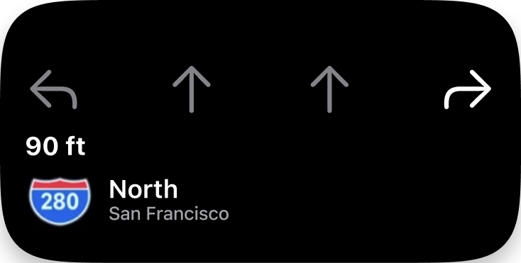
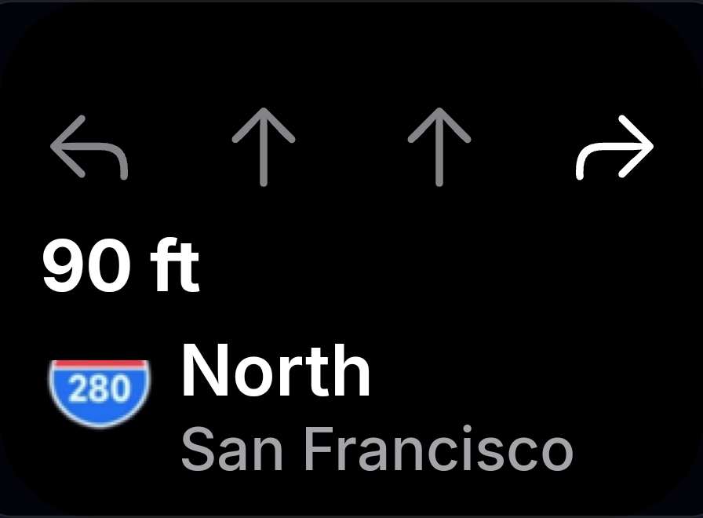

56. ColorOptions
Figma candidate 19:1034; visual acceptance pending.




Surface crops use the live island_surface bounds; full device PNGs are preserved. Matching outer geometry does not establish pixel parity. Dynamic fixture and font differences remain visible.
Figma candidate 19:1034; visual acceptance pending.

